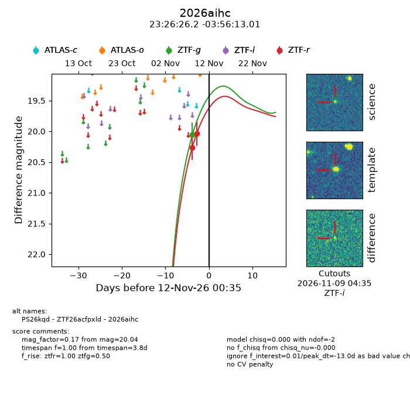
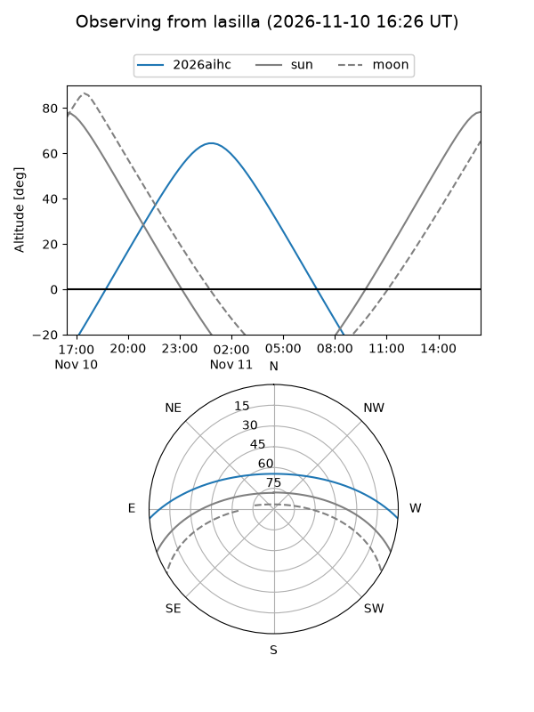
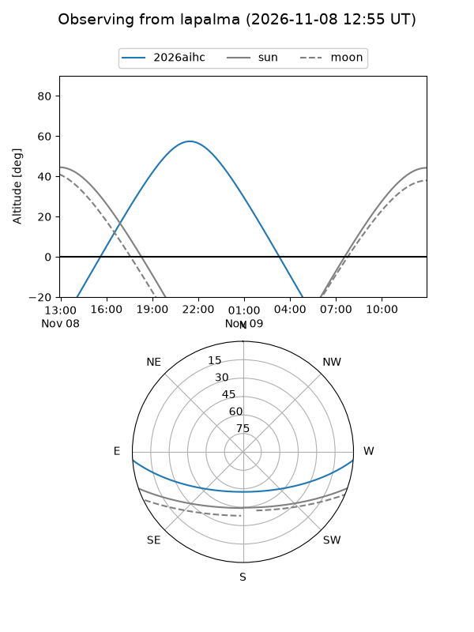
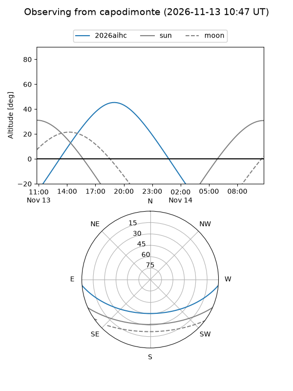
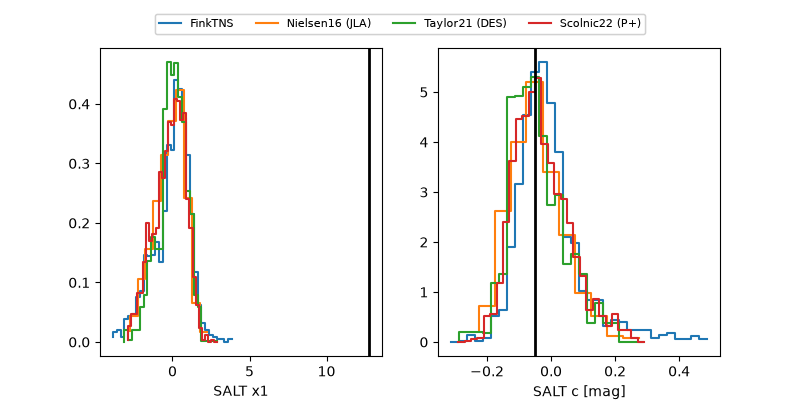

2026aihc
Target 2026aihc at 2026-11-12 00:37
Aliases and brokers:
FINK-ZTF: ztf.fink-portal.org/ZTF26acfpxld
Lasair-ZTF: lasair-ztf.lsst.ac.uk/objects/ZTF26acfpxld
ALeRCE-ZTF: alerce.online/object/ZTF26acfpxld
YSE-PZ: ziggy.ucolick.org/yse/transient_detail/2026aihc
TNS name: wis-tns.org/object/2026aihc
Direct TNS query: direct search
alt names
ZTF26acfpxld (ztf,fink_ztf)
2026aihc (tns,yse)
PS26kqd (panstarrs)
Coordinates:
equatorial (ra, dec) = 351.6093,-3.93695
equatorial (HMS+DMS) = 23:26:26.22,-03:56:13.01
galactic (l, b) = (78.0336,-59.18486)
Flags:
peak dt: -13.0
Photometry:
last ztfg=20.06, ztfr=20.04
1 ztfg, 2 ztfr detections
Lightcurve

Visibility



Additional plots
